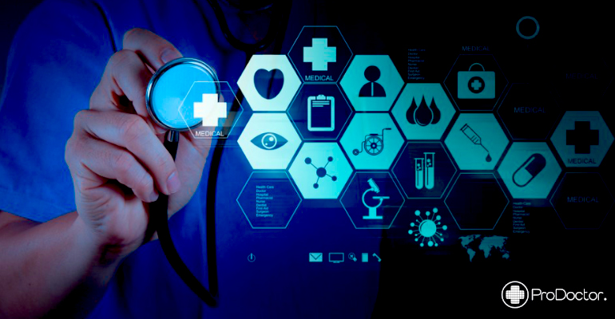

¿Cuales son las aplicaciones de la inteligencia artificial en la medicina?

Ayuda al diagnodyico y tratamiento
La inteligencia artificial le da a las máquinas la capacidad de “razonar y aprender”. Dos capacidades que son de gran utilidad en el diagnóstico clínico. Por ejemplo, un programa informático puede analizar la foto de una mancha en la piel y comparando con su base de datos establecer las probabilidades de que sea un melanoma. Aplicaciones parecidas se están desarrollando para otras muchas enfermedades, aunque de momento la IA complementa y afianza el diagnóstico de los médicos.
La planificación del tratamiento también sería otro punto fuerte de la IA, basándose en toda la información del paciente y el desarrollo de miles de casos parecidos podrían planificarse el tratamiento más eficaz.
Cuidadores roboticos
¿Una enfermera robótica? Parece que será una de las claves de la asistencia a ancianos y enfermos dependientes en el futuro. De momento ya se han desarrollado mascotas robóticas con fines terapéuticos para ayudar a los pacientes de Alzheimer. Las mascotas robóticas estimulan las funciones cerebrales de los pacientes retrasando los problemas cognitivos que a su vez mejoran la calidad de vida y reducen la dependencia de los servicios sociales.
Por otro lado, el uso de la telemedicina ya está ayudando a evitar desplazamientos innecesarios al centro médico y permitir una mayor autonomía personal.
aliviar la carga a los medicos
Las pruebas de análisis, las radiografías, las tomografías computarizadas, la entrada de datos y otras tareas mundanas se pueden realizar de forma más rápida y precisa si las llevan a cabo robots. La cardiología y la radiología son dos ejemplos de disciplinas donde la cantidad de datos para analizar pueden resultar abrumadoras.
Quizás en un futuro los casos sencillos queden exclusivamente en manos de la IA y los médicos humanos solo se ocupen de los más complicados.
ayuda en los farmacos
Conseguir nuevos medicamentos eficaces mediante la realización de ensayos clínicos puede llevar más de una década y costar miles de millones. Por tanto, agilizar el proceso gracias al uso de la IA podría literalmente cambiar el mundo.
En la última crisis del ébola, se utilizó un programa impulsado por AI para analizar medicamentos existentes que podrían rediseñarse para combatir la enfermedad. El programa encontró dos medicamentos que pueden reducir la infectividad del ébola en un día, cuando un análisis de este tipo suele llevar meses o años, una diferencia que posiblemente salvó miles de vidas.
Además, el uso de modelos informáticos elimina la necesidad de experimentación animal, cada vez peor vista.